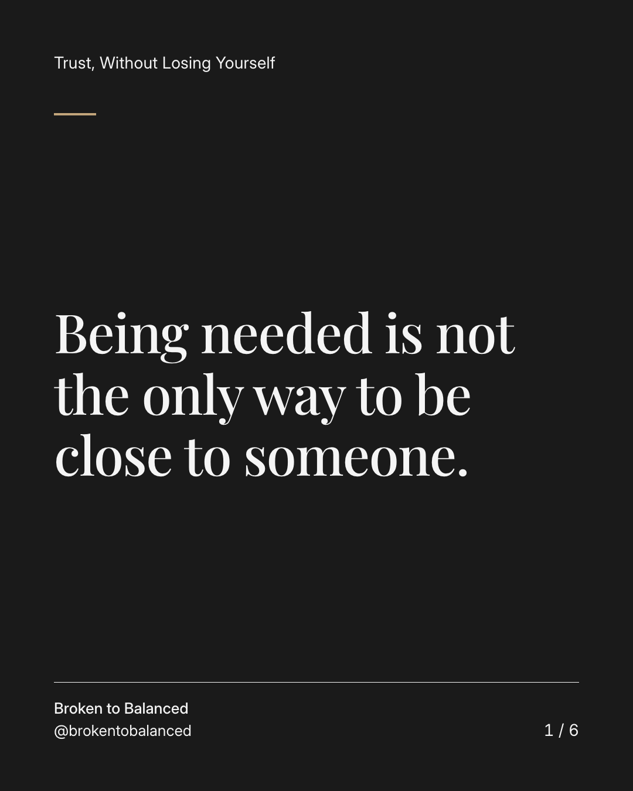
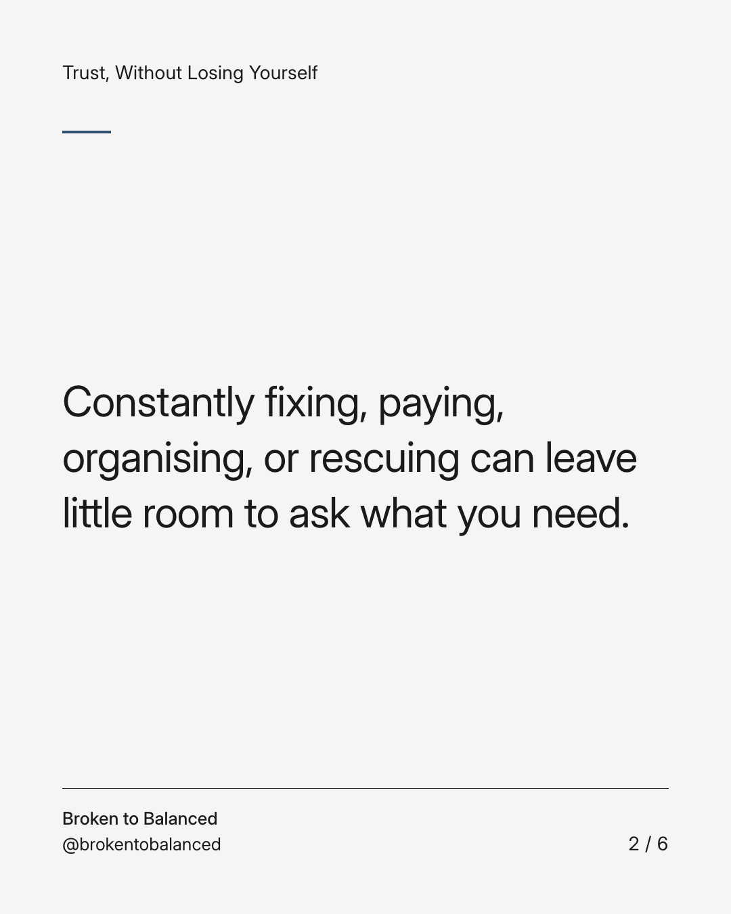
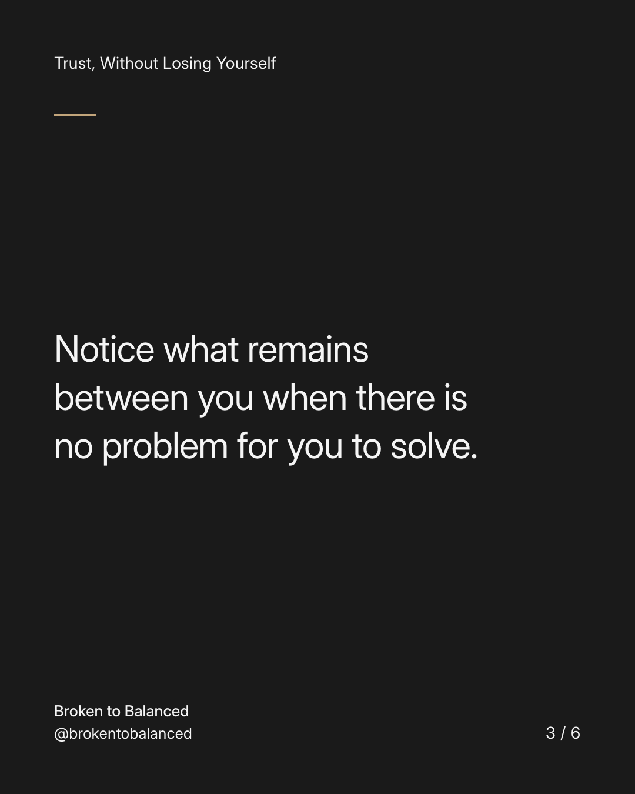
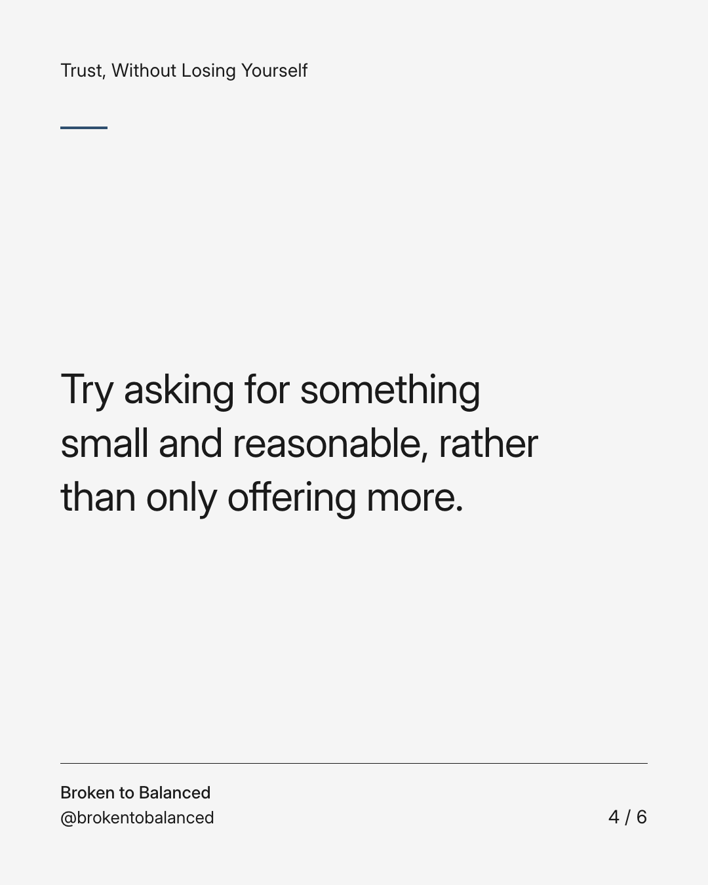
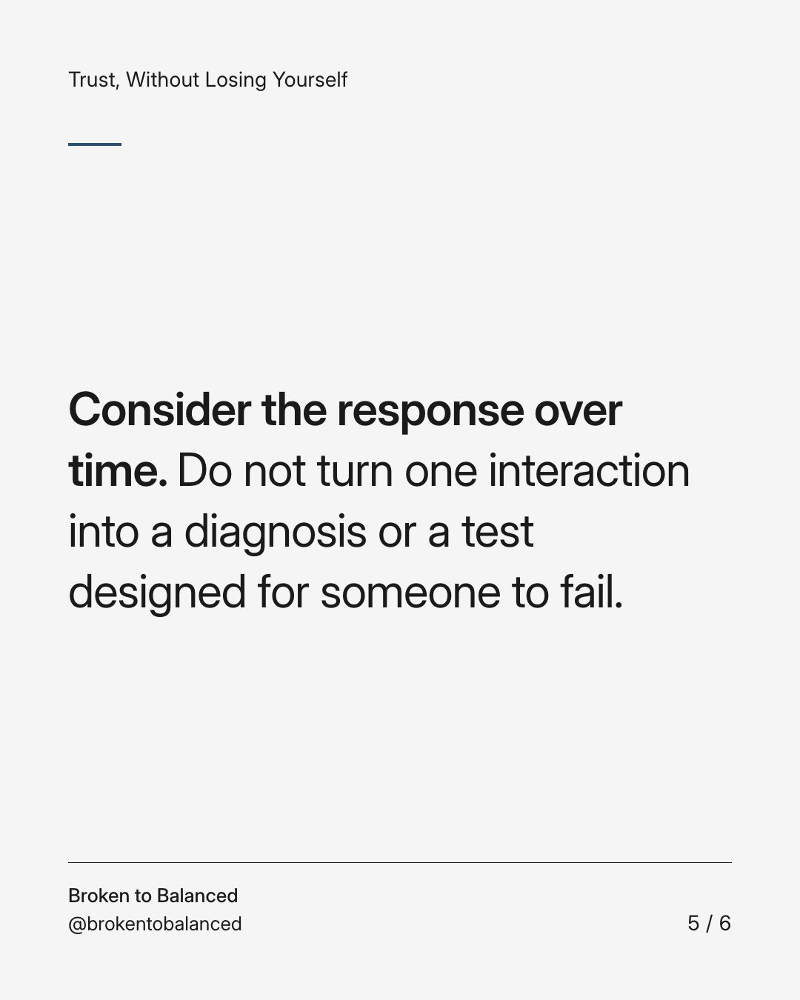
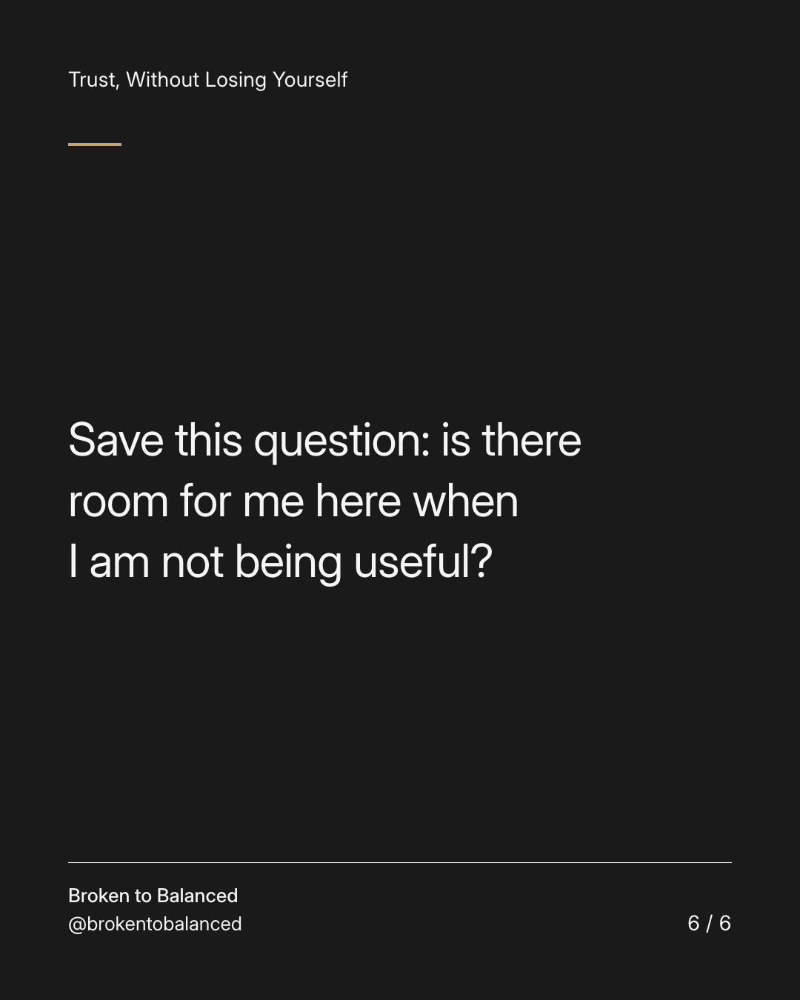

Exact text and accessibility text
Being needed is not the only way to be close to someone.
Slide 1 of 6. Being needed is not the only way to be close to someone.


Exact text and accessibility text
Constantly fixing, paying, organising, or rescuing can leave little room to ask what you need.
Slide 2 of 6. Constantly fixing, paying, organising, or rescuing can leave little room to ask what you need.


Exact text and accessibility text
Notice what remains between you when there is no problem for you to solve.
Slide 3 of 6. Notice what remains between you when there is no problem for you to solve.


Exact text and accessibility text
Try asking for something small and reasonable, rather than only offering more.
Slide 4 of 6. Try asking for something small and reasonable, rather than only offering more.


Exact text and accessibility text
Consider the response over time. Do not turn one interaction into a diagnosis or a test designed for someone to fail.
Slide 5 of 6. Consider the response over time. Do not turn one interaction into a diagnosis or a test designed for someone to fail.


Exact text and accessibility text
Save this question: is there room for me here when I am not being useful?
Slide 6 of 6. Save this question: is there room for me here when I am not being useful?
Exact caption
Plain-text fallback: select and copy the caption.